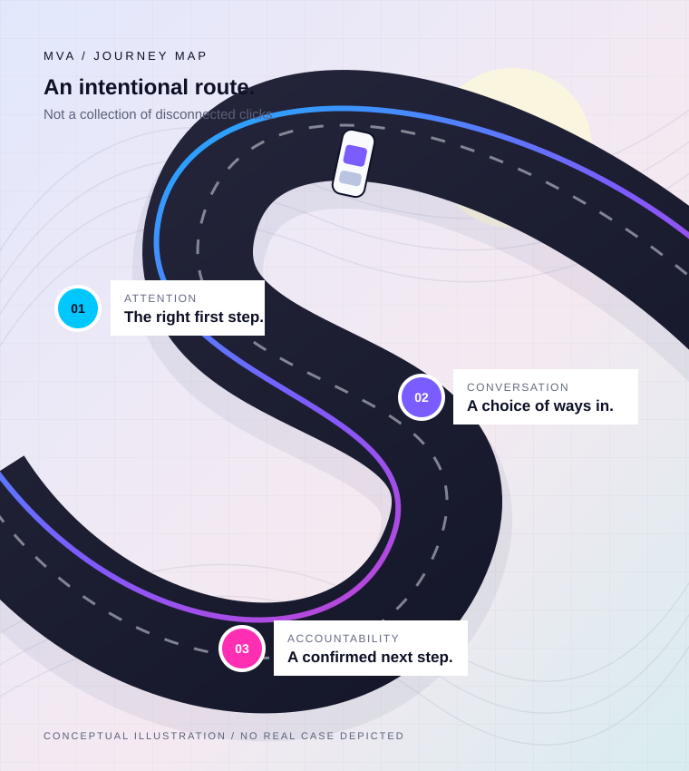

YF
Your FirmSample branded ad · not published
After a car accident, the next step can feel unclear. Start with a few questions for a firm to review.

MVA / SAMPLE CREATIVEWhat happens
What happens
after the accident?
Understand your next step.No outcome or representation promised.